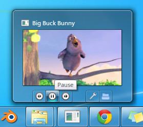

QWinThumbnailToolBar Class
The QWinThumbnailToolBar class allows manipulating the thumbnail toolbar of a window. More...
| Header: | #include <QWinThumbnailToolBar> |
| qmake: | QT += winextras |
| Since: | Qt 5.2 |
| Inherits: | QObject. |
Properties
- 1 property inherited from QObject
Public Functions
| QWinThumbnailToolBar(QObject * parent = 0) | |
| ~QWinThumbnailToolBar() | |
| void | addButton(QWinThumbnailToolButton * button) |
| QList<QWinThumbnailToolButton *> | buttons() const |
| int | count() const |
| void | removeButton(QWinThumbnailToolButton * button) |
| void | setButtons(const QList<QWinThumbnailToolButton *> & buttons) |
| void | setWindow(QWindow * window) |
| QWindow * | window() const |
- 31 public functions inherited from QObject
Public Slots
| void | clear() |
- 1 public slot inherited from QObject
Additional Inherited Members
- 2 signals inherited from QObject
- 1 public variable inherited from QObject
- 10 static public members inherited from QObject
- 9 protected functions inherited from QObject
- 2 protected variables inherited from QObject
Detailed Description
The QWinThumbnailToolBar class allows manipulating the thumbnail toolbar of a window.
Applications can embed a toolbar in the thumbnail of a window, which is shown when hovering over its taskbar icon. A thumbnail toolbar may provide quick access to the commands of a window without requiring the user to restore or activate the window.

The following example code illustrates how to use the functions in the QWinThumbnailToolBar and QWinThumbnailToolButton class to implement a thumbnail toolbar:
QWinThumbnailToolBar *thumbbar = QWinThumbnailToolBar(widget); thumbbar->setWindow(widget->windowHandle()); QWinThumbnailToolButton *settings = new QWinThumbnailToolButton(thumbbar); settings->setToolTip("Settings"); settings->setIcon(":/settings.png"); settings->setDismissOnClick(true); connect(settings, SIGNAL(clicked()), settingsPage, SLOT(show())); QWinThumbnailToolButton *playPause = new QWinThumbnailToolButton(thumbbar); playPause->setToolTip("Play/Pause"); playPause->setIcon(":/play.png"); connect(playPause, SIGNAL(clicked()), mediaPlayer, SLOT(play())); thumbbar->addButton(settings); thumbbar->addButton(playPause);
See also QWinThumbnailToolButton.
Property Documentation
count : const int
This property holds the number of buttons in the thumbnail toolbar.
Note: The number of buttons is limited to 7.
Access functions:
| int | count() const |
window : QWindow *
This property holds the window whose thumbnail toolbar is manipulated.
Access functions:
| QWindow * | window() const |
| void | setWindow(QWindow * window) |
Member Function Documentation
QWinThumbnailToolBar::QWinThumbnailToolBar(QObject * parent = 0)
Constructs a QWinThumbnailToolBar with the specified parent.
If parent is an instance of QWindow, it is automatically assigned as the thumbnail toolbar's window.
QWinThumbnailToolBar::~QWinThumbnailToolBar()
Destroys and clears the QWinThumbnailToolBar.
void QWinThumbnailToolBar::addButton(QWinThumbnailToolButton * button)
Adds a button to the thumbnail toolbar.
Note: The number of buttons is limited to 7.
QList<QWinThumbnailToolButton *> QWinThumbnailToolBar::buttons() const
Returns the list of buttons in the thumbnail toolbar.
See also setButtons().
void QWinThumbnailToolBar::clear() [slot]
Removes all buttons from the thumbnail toolbar.
void QWinThumbnailToolBar::removeButton(QWinThumbnailToolButton * button)
Removes the button from the thumbnail toolbar.
void QWinThumbnailToolBar::setButtons(const QList<QWinThumbnailToolButton *> & buttons)
Sets the list of buttons in the thumbnail toolbar.
Note: Any existing buttons are replaced.
See also buttons().